User guide
This guide follows the sidebar from top to bottom: where each page is, what is on it, and what to press. Every section opens with a screenshot; the numbered markers on the picture match the numbered list under it. The screenshots show the English interface; the Chinese interfaces have the same layout with translated labels. The Help page inside the product carries a condensed version of the same material plus the tool catalogue.
1. Getting around
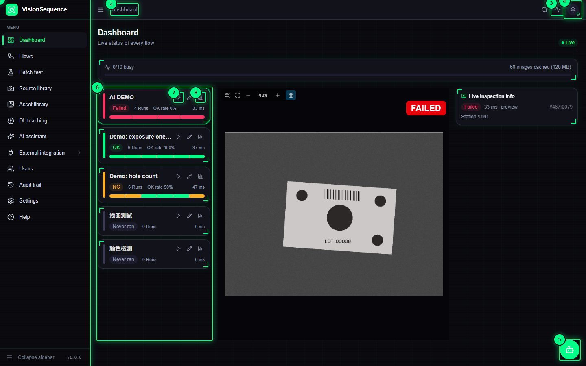
/)
- The sidebar: every page in the order used in this guide. "External integration" expands into its sub-pages; items your role cannot use are hidden. "Collapse sidebar" at the bottom shrinks it to icons; on a phone it becomes a drawer behind the ☰ button.
- The breadcrumb shows where you are (Dashboard › Flows › flow name) and each part is a link back.
- The capacity indicator: how many of the engine's workers are busy and how many images are cached; click for details.
- The user menu: who is signed in, change password, sign out. A green dot means the engine is free; when an integrator locks it a banner appears under the top bar (see 15. The engine lock).
- The AI assistant button, available on every page (see 14. The global assistant).
- The flow list: one card per flow with its last result and run count. Select a card to see its live image in the middle and the verdict and output values on the right.
- Run once on a card runs the saved flow immediately, no editor needed.
- The statistics shortcut opens the flow's run history, yield trend and image archive.
With no run yet the middle shows "Waiting for the next inspection"; as soon as an external trigger, continuous mode or "Run once" produces a run, the image with its overlays and the result appear there live.
1-1. Using the station from another PC
Nothing is installed on your PC: open the station's address in Chrome, Edge (111 or newer), Firefox (128+) or Safari (16.4+) — https://<station name>/, or the address your administrator gave you. The first time on a new PC the browser may warn about the certificate: your administrator has a small file, root.crt, to import once (how). Your language and theme are saved with your account, so every PC you sign in from looks the same; on a shared PC, sign out when you leave — that clears the assistant conversation and the command history from that browser. If the page stays blank and shows a notice about the browser version, the browser on that PC needs updating; the station is fine.
2. Signing in, roles and permissions
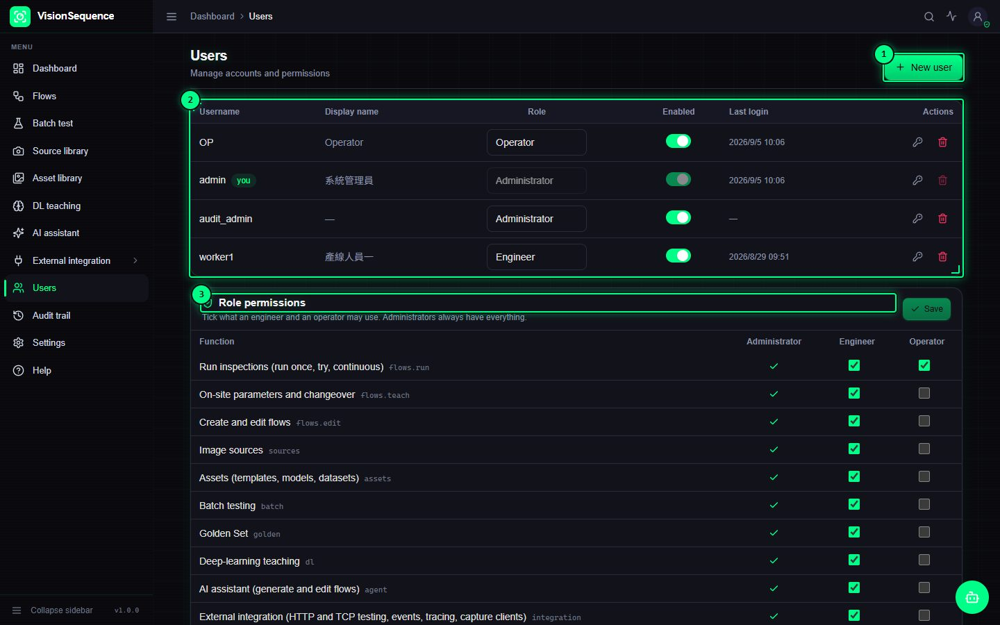
- New user: username, display name, role and password.
- The account table: change a role, disable an account, reset a password.
- Role permissions: tick, function by function, what an engineer and an operator may use.
- With no users yet, the sign-in page offers "Create the first administrator", and you are signed in as that account. An integrator uses an API key and never signs in.
- There are three roles; the table is the factory setting, and the Role permissions card adjusts it:
Role Can Cannot Administrator Everything, including accounts, connections and system settings — Engineer Create and edit flows, image sources and assets; deep-learning teaching, batch testing, Golden Set regression; change any parameter Accounts, outgoing connections, system settings Operator Run inspections, start and stop continuous mode, change over (switch the bound recipe), adjust on-site parameters on the teach page, view statistics Change a flow's structure, train models, batch test, edit sources or connections - Role permissions: take deep-learning teaching away from engineers, hand batch testing or the audit trail to operators, delegate the outgoing connections. Administrators always have everything and cannot be ticked off, so nobody can lock themselves out. The server checks every request, so a function that is not ticked cannot be reached by typing its address either; the sidebar and the buttons simply disappear.
- A flow belongs to the line, not to a person: every engineer can see and edit every flow (the Owner column only records who created it), so an engineer leaving never orphans a flow.
- On-site parameters are the ones a tool's author marked as teaching parameters — a threshold, a blob's minimum area. An operator changing those on the teach page writes straight back to the flow; changing anything else, or the structure, is refused by the server. Which parameters those are is shown in the "On-site" column of the tool page's parameter table.
3. The Flows page and templates
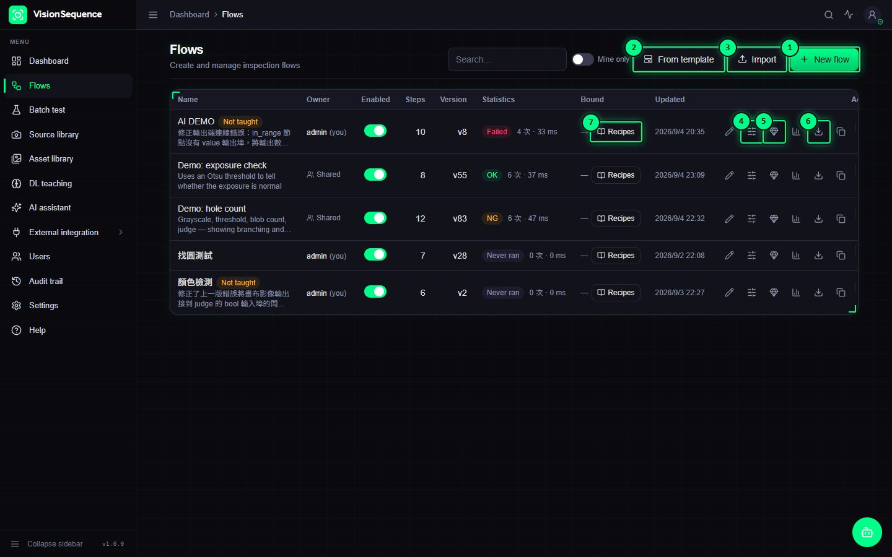
- New flow creates an empty flow and opens the editor.
- Create from template opens the template gallery.
- Import loads a flow exported as JSON (from another station or from version control).
- Per flow: the teach page (on-site parameters and recipes).
- The Golden Set of that flow.
- Export the flow as JSON.
- Recipes: the parameter sets for changeover.
The template gallery holds thirty built-in templates grouped by category — tutorial, counting, measurement, quality, defects, identification, then your own — with a filter row above the cards. Each built-in template carries its synthetic sample pictures: leave the source at "The template's sample pictures" and the acquire step becomes a Fixed image step that takes the next sample on each run (the fourth picture of most sets is the deliberate reject), so the new flow runs immediately; pick a real source instead when the camera is ready. Your own flow can be saved as a template for others to reuse. Details in Example templates.
Export and import use a stable JSON format, so flows can be kept in version control and moved between stations; the page asks which image source to bind on import. See Golden Set and export.
4. The flow editor
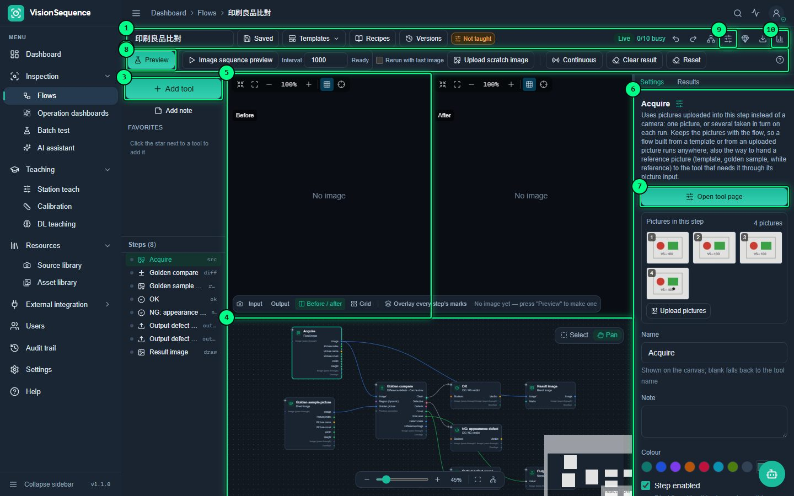
/flows/:id)
- Toolbar row 1: the flow name, Save, Templates, Recipes, Versions (history and restore) and the "Not taught" badge that links to the teach page.
- Toolbar row 2: Preview, "Rerun with last image", Upload scratch image, Batch test, Continuous and Reset.
- Add tool opens the tool picker (next figure); "Add note" drops a sticky note. Favourites you star in the picker appear underneath, and the step list at the bottom of the column jumps to a step.
- The canvas: steps and their typed ports. Drag from an output port to the next step's input port; only ports of the same colour connect.
- The image viewer: before and after images of the selected step with its overlays; the strip below switches input, output, before/after and "Overlay every step's marks".
- The inspector on the right: title, enabled, colour, "Continue on error" and the parameters of the selected step; its Results tab shows the last preview.
- Open tool page goes to the dedicated tuning page for that step.
- Preview runs the current canvas, unsaved changes included.
- The teach page shortcut.
- The statistics shortcut; the icons next to it are undo, auto-layout, versions, export and Golden Set.
- Wiring a judging tool's branch port to a step's
_flowport makes that step conditional; every step also passes its image straight through on the_imageport, so a tool that only produces numbers can still sit in the middle of an image chain. - Ctrl+S saves. Unsaved changes are kept as a draft and survive leaving and coming back; "Run once" and "Continuous" use the saved version, "Preview" uses the draft.
- Where is the time going? After a preview every step shows its time and a thin bar: the slowest step of that run is red, anything over half of it orange. Right-click a step and choose Run to here to run only that step and the ones before it — when you are tuning one step there is no need to wait for the rest of the flow.
- The inspector's Settings tab (nothing selected) holds the flow's description, continuous interval and enabled switch, then two cards: Variables — the values this flow keeps between runs (a count, the previous part, the lot number a PLC sent), which you can read, change or clear right there; and Board — what the operator board shows for this flow (see 7-1).
- No image source chosen yet? A yellow banner appears at the top of the editor; pick a source from the dropdown in the banner (or upload a scratch image) and you can preview straight away. Selecting the acquire step shows the current source in a dropdown with a preview thumbnail in the inspector, where you can switch source directly.
- No camera at all? Add a Fixed image step (Source category) instead of an image source and upload one or more pictures into it; they are stored with the flow (export carries them along) and each run takes the next one, while a preview stays on the current picture. The same step, with its role set to "reference", hands a template, golden sample or white reference to a locating, golden-comparison or flat-field tool through that tool's picture input port — no asset needed.
- Want to write a little Python? The Logic category has a "Python script" tool: write
def run(ctx)in the code editor on the tool page (np, cv2 and math are available), readctx.image, the upstream values inctx.inputs, the on-site parametersctx.params['p1'..'p3']and the region fromctx.roi(), and return a number, a bool, text, data, a new image and overlays, choosing the pass or fail branch. The output ports are fixed (value, result, text, data, image). The script runs in the engine process under restrictions — allow-listed imports, a timeout, a read-only input image — and only an administrator can edit and save it, which is what approves it. Everyone else can view and run an approved script, and adjust its on-site parameters on the teach page without touching the code.
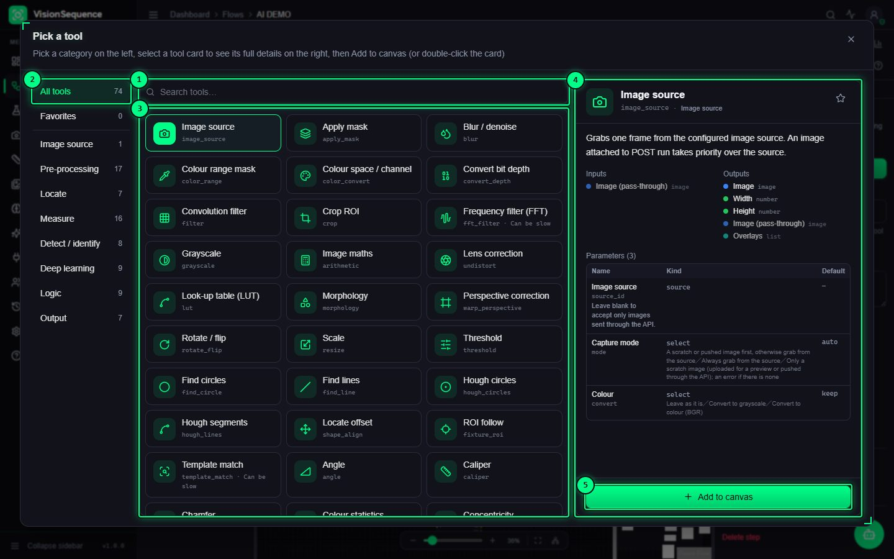
- Search by name or key.
- Categories: acquisition, pre-processing, locating, measurement, inspection, deep learning, logic, output.
- The tool cards of the category (icon, name, key).
- The details of the selected tool: description, input and output ports with their type colours, and the parameter table with defaults, ranges and the on-site flag. The star marks it as a favourite.
- Add to canvas (or double-click a card) inserts the step in the centre of the canvas.
5. The tool page and ROIs
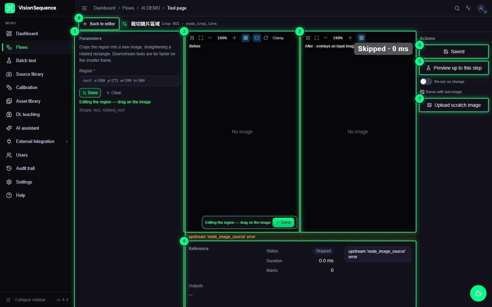
/flows/:id/tools/:step)
- The parameters of this step, grouped, with help text; a region parameter is drawn on the image instead.
- The input image (what the step receives), where ROIs are drawn.
- The output image with the step's overlays.
- Reference information: histogram, statistics and the step's output values.
- Run to this step previews the flow up to here.
- Save writes the parameter draft back to the flow.
- Upload scratch image gives the previews an image without touching the source library.
- Back to the editor (asks before discarding unsaved parameters).
- Changing a parameter does not run anything by default; press "Run to this step" to see the result. With "Auto apply" on, it runs 250 ms after each change.
- Parameter changes are held as a draft: "Save" writes them back to the flow, and leaving with unsaved changes asks whether to discard them.
- ROIs: a tool with a region parameter shows its ROI as soon as you open the page. Draw on the input image — rectangle, rotated rectangle, circle, ellipse, annulus (optionally a sector), polygon, polyline, line or point. Coordinates are pixels in that step's input image; a positive angle is clockwise on screen.
- "Re-run with last image" pins the same image while you tune; a template for locating or golden comparison can be created from a box drawn on the current image and saved as an asset directly.
6. The teach page, on-site parameters and recipes
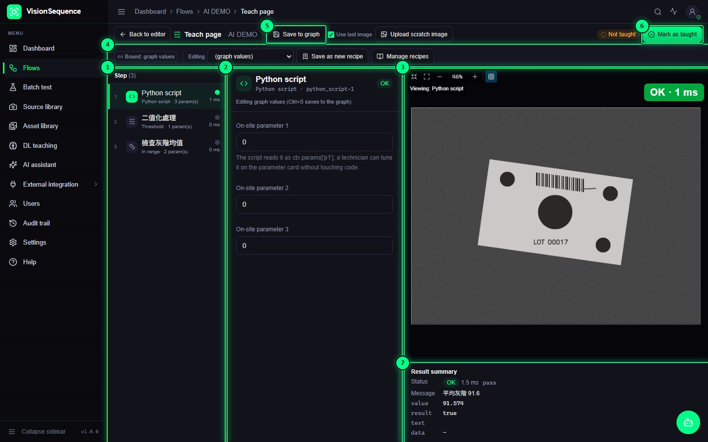
/flows/:id/teach)
- The steps that have on-site parameters; pick one.
- The on-site parameters of that step: only the ones the tool's author marked as teachable.
- A live preview that re-runs as you change values.
- The recipe row: which parameter set is being edited (the graph itself or a named recipe), and the recipe manager.
- Save writes the values to the graph or the recipe (Ctrl+S).
- Mark as commissioned: the engineer's sign-off that the flow is tuned; an uncommissioned flow still runs, its runs just carry a warning.
- The step's output values for the current image.
- Recipes are named parameter overrides for the same flow (product A, product B). "Save as recipe" stores the current values; the flow's default recipe is applied when nothing else is asked for, and an external trigger can name the recipe to use.
- Changeover is switching the active recipe on this page or through the API; an operator may do it, while changing a recipe's contents needs an engineer.
- An operator sees this page read-only when the role lacks "On-site parameters and changeover"; the header says why.
Where the newer inspection tools live
The tool picker groups every tool by category, so the additions of the algorithm round are found where their job is: Pre-process — Polar unwrap and Polar restore (rings, gears, threads), Flat-field correction (uneven lighting), Lens undistortion, Photometric stereo (four-light surface shape for embossed and engraved marks); Locate — Shape match (edge-direction matching that survives occlusion and lighting), Region from shape and Region combine (exclusion zones); Measure — the contour chain (Contour find, filter, geometry, match), Circular caliper and Profile defects (chipped rims), Form and position tolerance (straightness, roundness, parallelism and friends), Real-world coordinates; Detect — Statistical template compare, Anomaly detection (good parts only), OCR read and OCV verify, Barcode quality grade. Each has a ready template in the gallery whose sample pictures show the intended use, and the Inspection capabilities page lists what every one measures and how accurately.
7. Preview, run, continuous and statistics
| Action | Which version | What it does |
|---|---|---|
| Preview | The current canvas, unsaved changes included | Keeps every intermediate image; nothing is written to the run history. |
| Run once | The saved version | A real run, the same as an external trigger; written to the run history and the statistics. |
| Continuous | The saved version | Runs repeatedly at the configured interval; the dashboard shows the live image and result. |
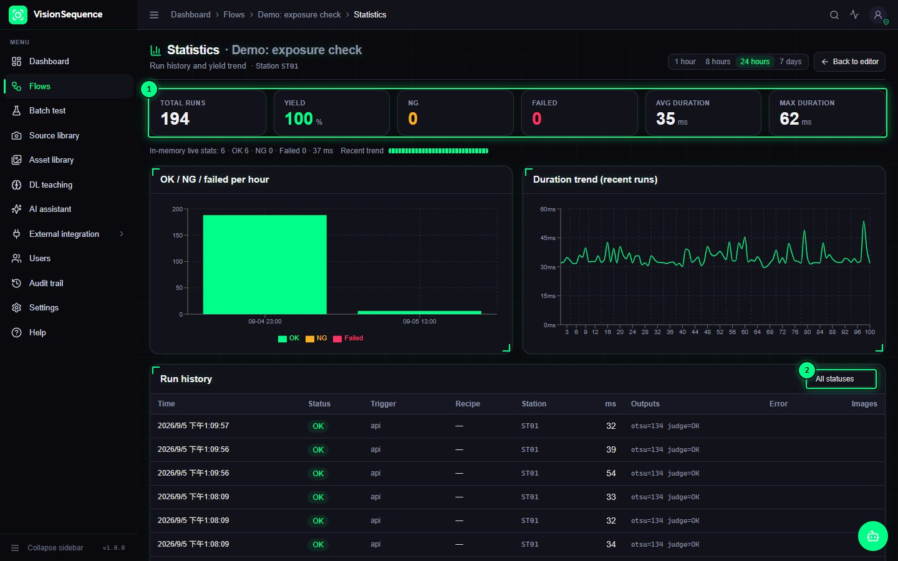
/flows/:id/stats)
- The KPI strip: runs, OK, NG, failed, yield and timing, from the hourly totals that survive restarts and clean-ups.
- The status filter for the run history below; clicking a row opens the run's images when they were archived.
Open an archived picture and press Rerun this picture in the editor: it becomes the editor's scratch image, so the reject from three days ago can be run again through the current flow while you adjust it.
Image archive: the platform keeps no run images by default (memory holds the last few and a restart clears them). To be able to show what the camera saw when a customer complains, turn on the image archive on this page (rejects only, or every run, with a sample rate for OK runs). From then on every reject and failure writes its source and result image to disk, reachable by clicking a row in the run history, and old ones are purged automatically once they exceed the retention period or the total size limit (VISION_ARCHIVE_DAYS, VISION_ARCHIVE_MAX_GB; ship a whole plant with it on using VISION_ARCHIVE_DEFAULT). The page reminds you when there are rejects but the archive is off.
7-1. The operator board
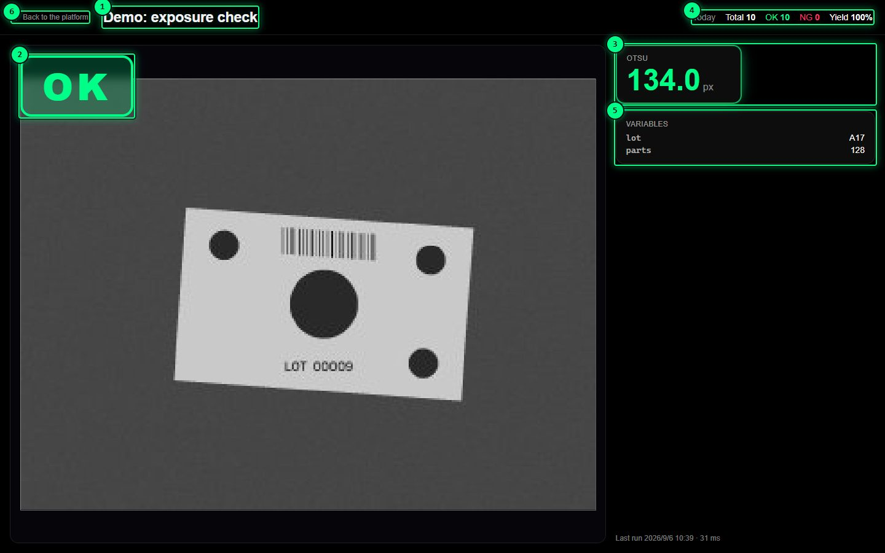
/board/:id)
- The board title (the flow name unless you set one).
- The verdict of the last part, large enough to read from across the line, with the verdict label when the flow gives one.
- The values chosen for this flow, each with its label and unit; a value outside its tolerance turns red.
- Today: total, OK, NG and yield, from the same hourly totals as the statistics page.
- The flow's variables (the lot number, the running count).
- Back to the platform. The board needs no sidebar; open it in the browser's kiosk mode on a screen by the line.
Choosing what the board shows. In the flow editor, with nothing selected, the Settings tab has a Board card: tick the named outputs to display, give each a label, a unit, the number of decimals and a min and max (values outside turn red on the board and on the Dashboard), pick which step's picture to show (the last one by default), list the variables to show, and switch the verdict, today's counts and the marks on or off. Save, then open the board. The Dashboard follows the same settings, so the live panel there shows the same values with the same colours.
Every part updates the board as it is inspected; the counts refresh every fifteen seconds. Building your own screen instead? One request, GET /api/vision/flows/{id}/board, returns exactly what this page shows, tolerance verdicts included (Automation).
Measurements and precision on the Statistics page
The Statistics page has two views. Yield is the OK/NG history described above. Measurements is a control chart of one named output over time: pick the output, the chart (I-MR for one value per run, X̄-R with a subgroup size when runs come in batches) and the period (24 h, 7 d, 30 d). The chart draws the centre line and the control limits computed from the data, and the specification limits (USL/LSL, dashed) when a Tolerance judge step is bound to the same value — that binding is also what gives Cp and Cpk. Points that trigger a Nelson rule (one point beyond 3σ, nine on one side, six rising or falling, and so on) are drawn in red and the rules are listed under the chart. The values come from the measurement log, which keeps a year of numeric outputs independently of the run history, so a drift over the last three months is visible even though the run detail is long gone.
When a flow is drifting or out of specification right now (the latest points trigger a rule, or the last thirty include values outside the specification), the dashboard shows a measurement alert with a link to the flow's statistics. There is no push notification; the alert is on screen.
The Precision study card at the bottom of the Yield view runs the flow the way a verifier would test it — the same picture N times (repeatability) or the same part captured N times (reproducibility) — and reports the σ and range of every numeric output, with a copyable report. Gauge R&R over several parts runs from the command line (manage.py precision, see Performance).
8. Batch testing
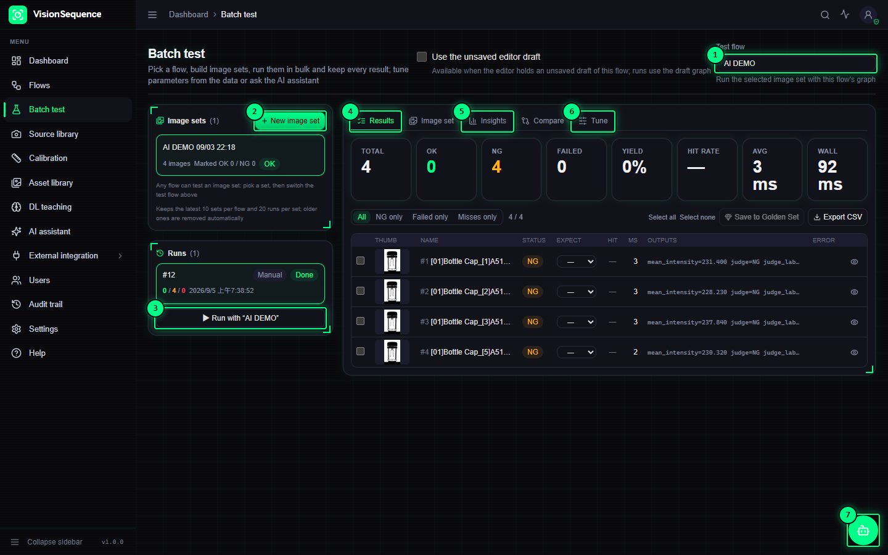
/batch)
- Test flow: the flow the images will run through; any set can test any flow.
- New image set: upload images or grab N from an image source (200 per set at most).
- Run the selected set with the test flow; it runs in the background with a progress bar and can be interrupted.
- The Results tab: per-image status, expected label, hit and outputs.
- The Insights tab: missed images, failing steps, threshold suggestions, output distributions and the trend across runs.
- The Tune tab: change on-site parameters and re-run, then write back to the flow, save as a recipe or send to the editor; the Images tab labels expectations and the Compare tab puts two runs side by side.
- The assistant: with a finished run selected it consults on the data or tunes from it.
- Selecting a set fills in the flow it was created under; to compare a different flow, change the dropdown and run again. With unsaved changes in the editor you can tick "use the editor's unsaved draft".
- Every run's per-image results are kept and can be revisited from the run list (a run against a different flow shows that flow's name).
- On the Images tab, label each image with its expected OK or NG; the Results tab then shows the hit rate and which images matched, and Insights can suggest thresholds. "Apply and re-run" produces a new run.
- Ask the assistant "why was image 3 NG?" or give a tuning instruction; the Tune tab also has "Auto-tune". All of them land as new runs, so nothing is lost.
- Tick images and "Save to Golden Set" to make them a regression baseline. See Batch testing.
9. The Golden Set
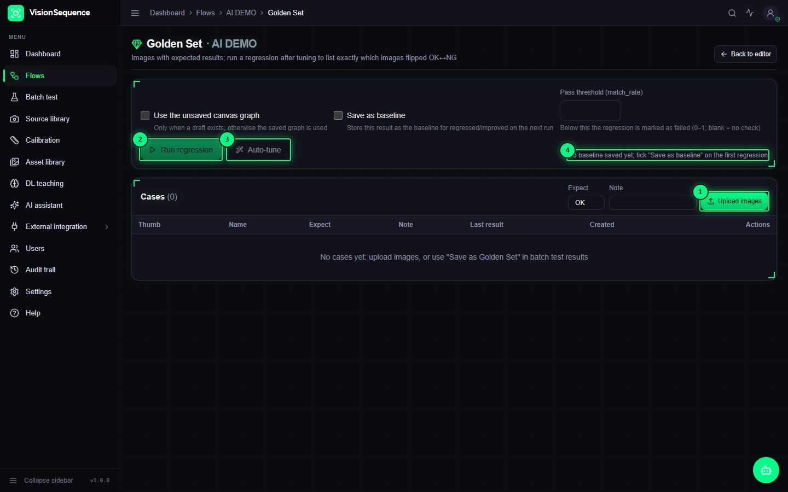
/flows/:id/golden)
- Upload images as cases, each with its expected OK or NG (or send them from a batch run).
- Run regression: every case runs and is compared with its expectation and the baseline; regressed cases come first.
- Auto-tune searches the on-site parameters for a better hit rate and lets you apply the result.
- Baseline: freeze the current results as the reference for the next regression.
The Golden Set is the safety net after tuning: it tells you exactly which images flipped between OK and NG. It also runs from the command line (manage.py regress) so it can gate a CI pipeline. See Golden Set and export.
10. Image sources
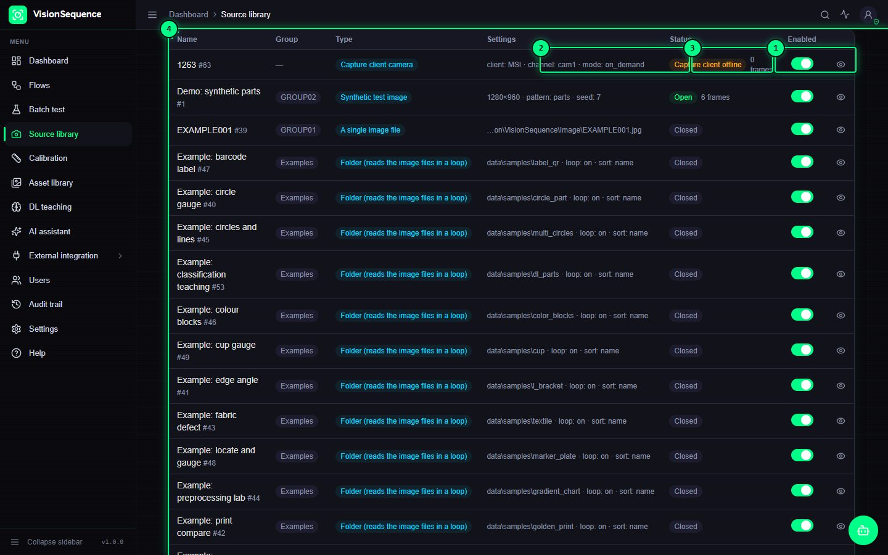
/sources)
- New source opens the form (next figure).
- Download capture client: the desktop program for cameras on another PC or behind a vendor SDK.
- Manage groups: rename or delete the groups shown as filter chips above the list.
- The list: name, group, kind, settings summary and live status (connected, fps, last frame); the switch enables or disables a source and the eye previews it.
The example sample pictures do not appear here any more: they travel with the templates as fixed images (see the Fixed image step above), so the library only holds your cameras, folders and pushed sources.
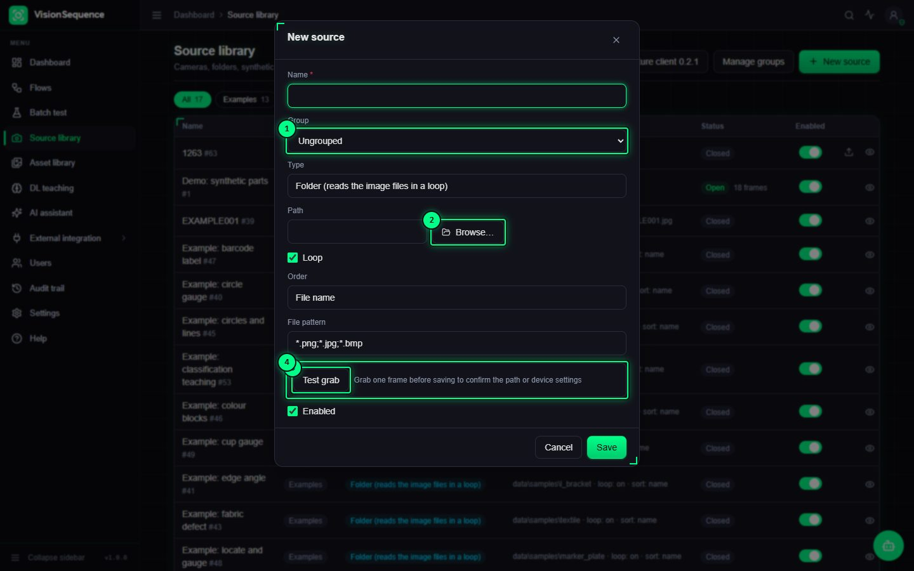
- The kind: capture client camera, folder (read in a loop), a single file, pushed uploads, a synthetic generator, or a plugin kind.
- Browse opens a server-side file browser for folder and file kinds.
- Test grab grabs one image with the current settings before saving.
- The result: size, time taken and a thumbnail, or the reason it failed.
When the camera is on another PC, or needs a Basler or IDS SDK
You do not have to move the camera to the server. Use "Download capture client", unzip and run VisionSequenceCapture.exe on the camera's PC, fill in the server address (port 9100) and a client name under Connection, then add the camera as a channel, open it and start acquiring (you can draw an ROI on the preview to send only that region, and adjust and save camera parameters). Back in the web interface, add a source of kind "capture client camera", pick the client and the channel, choose "on demand" (a fresh frame for every run) or "continuous stream", and press Test grab before saving. The status column shows whether the client is online, its fps and the age of the last frame; Integration › Capture client lists every connected client and lets you turn streaming on and preview. On the same machine it uses shared memory automatically; across machines it is lossless over TCP. "Capture client offline" in the list means the program is not connected. Details in Capture client.
A capture client camera times out during a run: first check on the client that the channel says it is acquiring and the preview is live. A camera in trigger mode needs a trigger signal. With a long exposure, or across a network, increase the source's timeout in milliseconds. Turning off "require a fresh frame" lets it use whatever frame the client already has.
10-2. Calibration: millimetres, lens distortion and robot coordinates
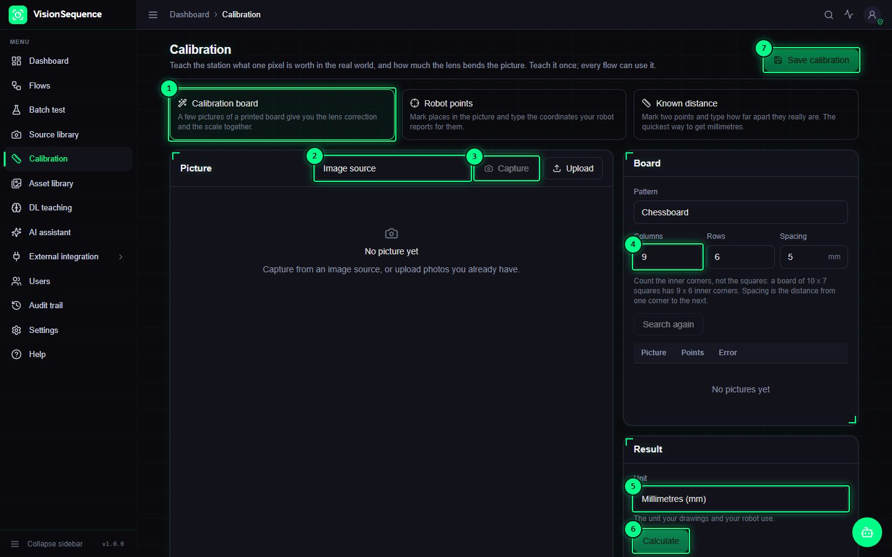
/calibration)
- The three ways to teach it, and what each one gives you. Calibration board: a few pictures of a printed board give the lens correction and the scale together. Robot points: mark places in the picture and type the coordinates your robot reports, so a position can be handed straight to the robot. Known distance: mark two points, type how far apart they really are, done.
- The image source to take pictures from; you can also upload photos taken earlier.
- Capture takes a picture. In board mode every picture is searched for the board straight away and listed with the number of points found, so you see immediately whether that angle worked.
- The board: pattern, and its size in inner corners (a board of 10 x 7 squares is 9 x 6) plus the spacing between two neighbours. Get these wrong and no board is found; the page says so rather than failing silently.
- The unit your drawings and your robot use.
- Calculate works it out but does not save it: you first see how well it fits.
- Save calibration stores it as an asset. Pick it afterwards in the Lens correction, Real-world coordinates or Pixel calibration step.
Which way to use. If you only need measurements in millimetres, Known distance takes a minute: mark two points on something you have measured, type the distance. If the lens visibly bows straight edges near the corners, or the same part measures differently in the middle and at the edge of the field, use a calibration board — take three or more pictures with the board tilted and at different distances, filling the frame. If a robot has to go and pick the part up, use Robot points: jog the robot to three or more spots you can see, and type the coordinates it reports at each one.
Read the error before you save. Every method reports how well it fits. A board calibration shows the reprojection error per picture, so you can delete the one that was blurred and calculate again. Robot points show the error of each point, and the worst one is marked red on the image — usually that is where the robot was jogged to the wrong place or a coordinate was typed wrong. The result carries a plain verdict: good, fair, or do it again.
Marking points is forgiving. Click near a hole, a printed dot or a corner and the mark snaps to its centre, so you do not have to hit the exact pixel. Turn that off if you really want the spot you clicked.
Using it in a flow. One saved calibration serves all three steps: Lens correction straightens the picture (put it right after the image source, before anything that measures), Pixel calibration in "from a calibration" mode converts a length to millimetres, and Real-world coordinates converts a position to the coordinates your machine works in, along with lengths and angles. Because they all read the same asset, recalibrating the station updates every flow at once — you do not go hunting for the number typed into each step.
If the camera is later moved, refocused or swapped, calibrate again. A calibration made at full resolution still works when the flow runs at half resolution: the lens correction is rescaled automatically, and if the aspect ratio differs the step says so instead of quietly correcting the wrong amount.
11. Assets
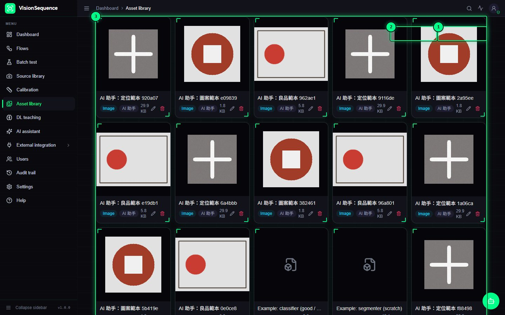
/assets)
- Upload asset: a template image, a model file (ONNX or a trained weight) or a dataset archive.
- Cards or tree: the switch at the top right of the page. Cards show thumbnails; the tree groups everything by kind and then by group, with sizes and dates — easier when the library holds models and files that have no thumbnail. Your choice is remembered on this browser.
- Manage groups, the same way as sources.
- The asset cards; a tool page can also create a template from a box drawn on the current image and save it here directly.
Templates are used by locating and golden-comparison tools, models by the deep-learning tools, and dataset archives by the teaching page. A reference picture can also be given to a tool without an asset: connect a Fixed image step (role "reference") to the tool's picture input port, which is how the built-in templates carry their golden prints and locator templates. The example statistical template, shape model and taught models are in the "Examples" group.
12. Deep-learning teaching
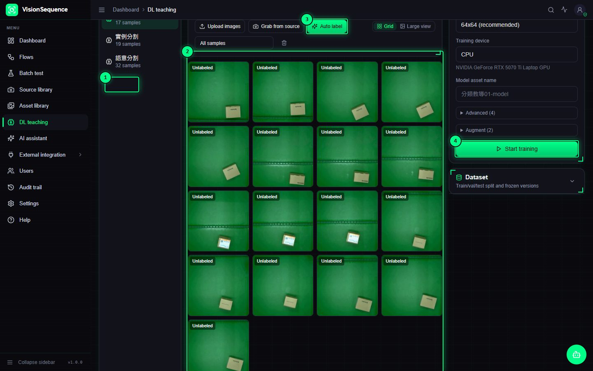
/dl)
- New teaching project: choose the model kind (classification, semantic segmentation, instance segmentation, detection, pose, oriented boxes).
- The sample grid: upload, a zip, a burst from a source, or import a dataset; duplicates are skipped automatically. Click a thumbnail to label it.
- Auto-label: let the current model, or the smart-select model, propose labels that you confirm.
- Train: split into train, val and test, freeze a dataset version and start training on the server; the finished model lands in the asset library.
- Label: for classification, click a thumbnail and choose the class; for segmentation and detection, draw polygons or boxes, with "Smart select" clicking an object to trace it automatically.
- "Create a flow with this model" after training builds an acquire → inference flow and opens it in the editor.
See Deep-learning teaching for trainers, GPU setup and export formats.
13. The AI assistant page: a flow from an image
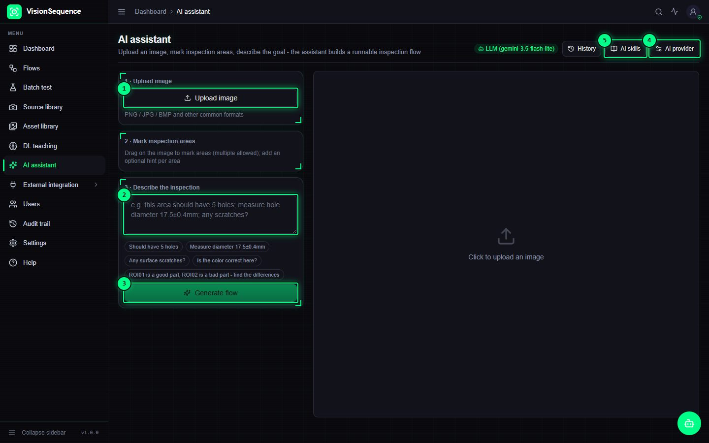
/agent)
- Upload image: one or more images; draw the areas to inspect on them. Each ROI is numbered (ROI01, ROI02…) and can carry a hint such as "good", "bad" or "locator".
- The request: one sentence — "there should be 5 holes", "measure the diameter, 17.5 ± 0.4 mm", "ROI01 is good and ROI02 is bad, find the difference".
- Generate: the assistant asks for anything it still needs, generates the flow and runs it on every image, marking each thumbnail OK or NG.
- AI provider: the offline rule engine or Claude, GPT or Gemini with your own key (stored on the server, tied to your account); saving tests the connection, "List models" shows what the key can use, and the working mode chooses single or agentic.
- Skills: what the assistant follows, with your own or the site's notes added under each skill.
- Optionally mark each thumbnail with the verdict it should get; an image whose ROI hint says "good" or "bad" is labelled automatically. An ROI hinted as "locator" marks a fixed feature, and the flow then gets locate correction added in front when the part can move.
- The rule engine produces several candidates and picks the best against your labels — the result card lets you switch between them — and with two or more labelled images it auto-tunes.
- Refine it in words ("too many false rejects", "expect 4 instead", "tolerance ±0.2"), then "Save as flow" to open it in the editor. Thumbs up or down on the result card influences whether these parameters are reused on similar images later.
- History shows past sessions, and "Restore" brings back the images, ROIs, request and labels and re-runs them. In agentic mode the assistant drafts, tries, edits and verifies step by step, showing a timeline you can interrupt or answer questions in.
See AI assistant.
14. The global assistant (on every page)
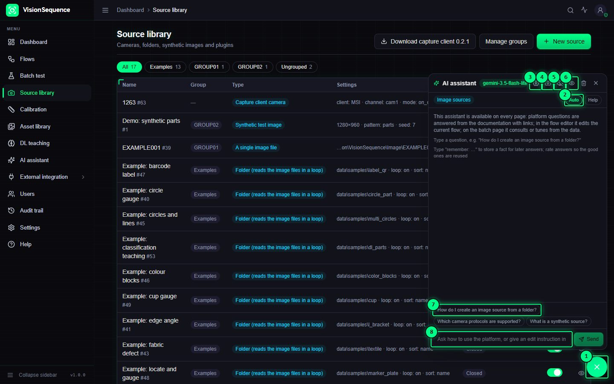
- The button opens and closes the panel; a badge counts unread hints.
- The mode chips: Auto routes by itself; Help, Edit flow, Consult data and Tune from data force a mode.
- Memory: the facts you asked it to remember and your rated answers.
- New conversation (＋) and past conversations (the clock, next to it): conversations are kept with your account — the panel saves the current one as you talk, and the list reopens or deletes an older one. Fifty conversations per person, sixty messages each; the newest survive.
- Screenshot: attach a picture of this page to the next question (needs an LLM provider that reads images).
- Screen text: attach a text summary of what is on screen to the following questions.
- Sharing: whether the page snapshot and your recent actions travel with each question; off means it only knows which page you are on.
- Quick prompts for the current page.
- The input: a question, an instruction, or "remember: …" to store a fact.
- Type a question ("how do I create an image source from a folder?") and it answers from the platform documentation, in the interface language, naming the page, tab and button, with links to the sections it used and a "go there" chip when the answer is a place.
- In the flow editor, type an instruction ("set the blob minimum area to 40", "disable the noise removal") and it edits the current canvas; "Apply to canvas" writes it back, and it can be undone. On the batch page, with a finished run selected, ask about the data or give a tuning instruction, and the result becomes a new run.
- It sees your situation: the page, what is selected, the last run, recent errors, your role and the engine lock. When something recognisable fails — a locked engine, a role that is not allowed, a receiver that is not listening, a step without a source — a hint card appears with a one-line explanation and "Ask the assistant".
- With an LLM provider it can also read the live state (flows, sources, connections, a run report, the lock, plugins) before answering, always within your own permissions; the reply lists what it checked.
- Rate answers with thumbs up or down: good ones are reused for similar questions. Conversations and memory are yours alone — another person signing in sees their own.
15. Integration
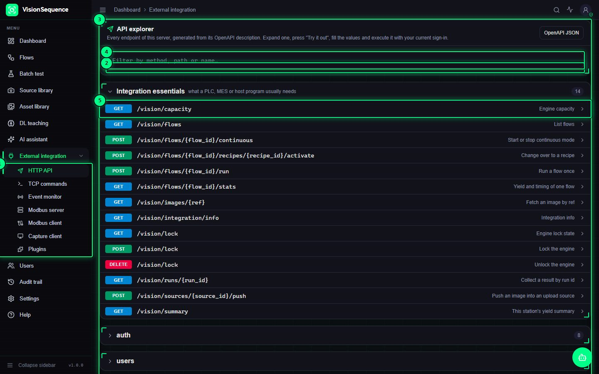
/integration/http)
- The sub-pages: HTTP API, TCP commands, Event monitor, Modbus server, Modbus client, Capture client, Plugins.
- The info bar: HTTP base, TCP port, capture port, whether an API key is required, workers and timeout.
- The tabs of the page: Try it, Response format, Commands and results.
- Search the API.
- The endpoints, the essential ones first with a plain-language description; open one to fill in parameters, execute it and copy a curl, Python or C# snippet.
- HTTP:
POST /api/vision/flows/{id}/run(optionally with an image and a recipe) returns the verdict, the named outputs and the run id. TCP:RUN <id>on one line; the TCP page lists every command with its failure codes and has a console to try them. Events: an SSE stream that the Event monitor page shows live. - The Commands and results tab on each page shows what came in and what went out on that channel in the last minutes — the first place to look when a device "did nothing".
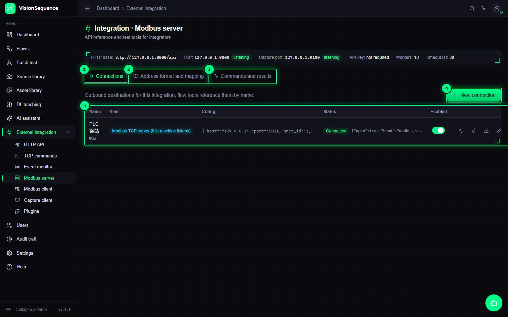
/integration/modbus-server; Modbus client and TCP commands manage their connections the same way)
- Connections: the connections of this kind; the platform listens here and any Modbus TCP master reads results and writes triggers.
- Address format and mapping: how registers and coils map to flow outputs and triggers.
- Commands and results: every request the master sent.
- New connection (no kind to choose; the page decides it).
- The connection list with live status; the icons test a connection, write values by hand, edit and delete.
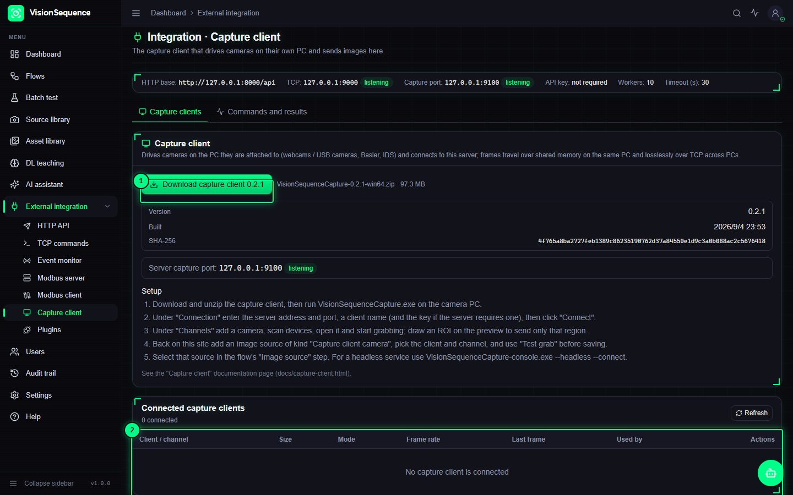
- Download capture client (version, size, SHA-256) with the setup steps and whether the capture port is listening.
- Every connected client and channel (size, mode, fps, last frame, which source uses it) with streaming and preview controls.
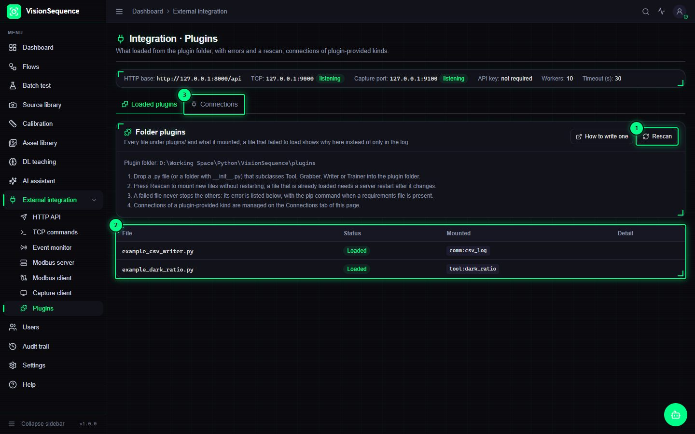
- Rescan mounts files newly dropped into
plugins/and retries failed ones (a changed file that was already loaded needs a restart). - What each plugin file mounted (tools, sources, writers, trainers), disabled ones and load errors with the pip hint.
- Connections whose kind comes from a plugin.
See Automation, Modbus, Capture client and Plugins.
16. The engine lock
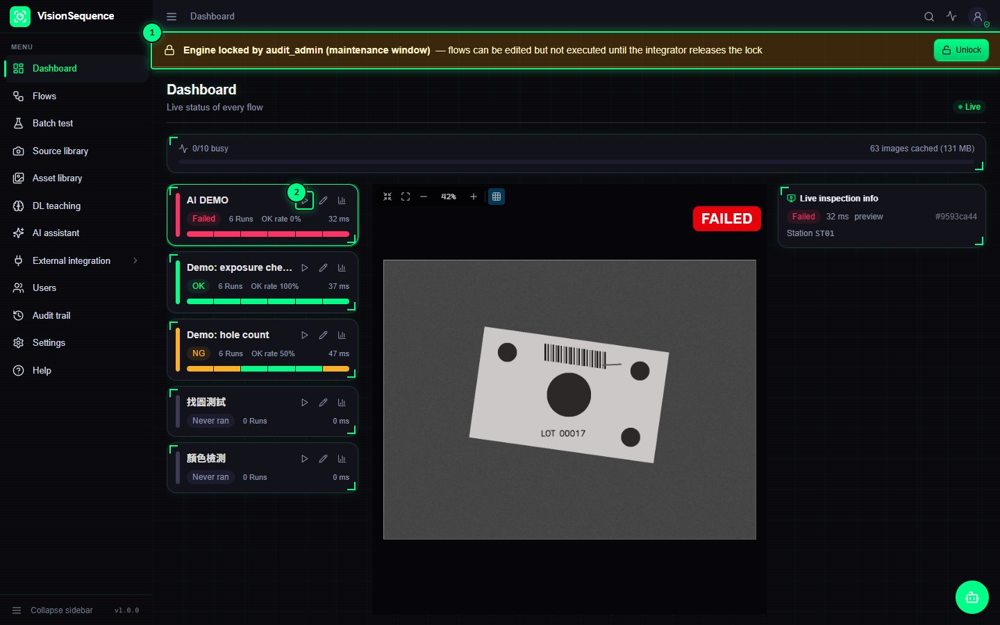
- The banner under the top bar: who holds the lock and why; an administrator or the holder can release it from here.
- Everything that runs the engine — Run once, Preview, Continuous — is refused with error 423 while locked; editing and saving still work.
An integrator or an administrator locks the engine from the outside — HTTP POST /api/vision/lock or the TCP command LOCK — to keep the hardware for a machine cycle or a maintenance window; UNLOCK or DELETE releases it, and a lock can carry a time-to-live so a forgotten one expires. Every continuous run stops when the lock is taken. The integrator's own triggers are not affected.
17. Audit trail, settings and help
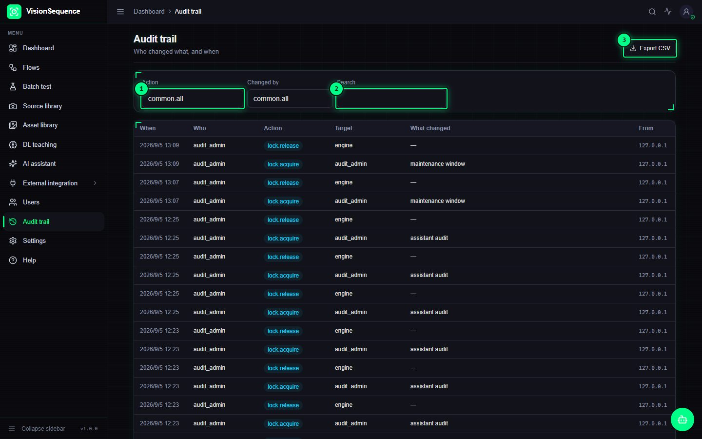
- Filter by action (flow.update, recipe.activate, user.create, lock.acquire…) or by actor.
- Search the summaries and target names.
- Export CSV.
Next to the search box, From and To restrict the list to a date range (the To day included) and Rows per page chooses 25 to 500 rows; the same since/until/limit parameters work on the API and the CSV export.
The trail records changes, not runs: who changed which flow, parameter, recipe, source, connection, account or lock, when and from where, with a parameter-level diff for flows. Runs are in the statistics and the image archive instead.
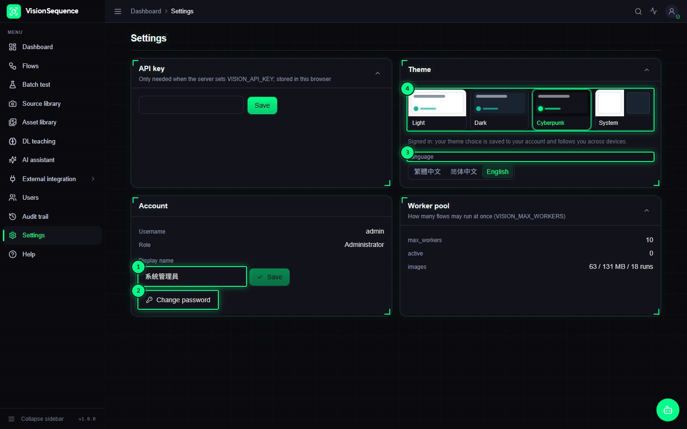
- Your own display name (an administrator still manages usernames, roles and other people's passwords on the Users page).
- Change password.
- The interface language (English, 繁體中文, 简体中文).
- The theme (light, dark, Cyberpunk or follow the system). Language and theme are stored with your account and follow you between devices.
Data retention (administrators only, on the same page): how long run detail, the audit trail, measurements and archived pictures are kept — a year by default, and zero means for ever — plus how many backups to keep and which hour the maintenance window runs in. The card also shows the database size, how many rows each store holds and when the last clean-up ran, with a "Clean up now" button. Clean-up only happens while the engine is idle, in small batches, so it never delays an inspection; hourly totals (the yield curves) are never deleted. See Deployment §9a.
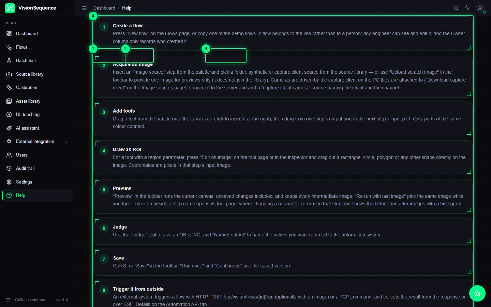
- Quick start: the condensed walkthrough.
- Glossary: pages, editor areas, core terms and status wording.
- The tool catalogue: every tool with its parameters and ports, in the interface language; the other tabs cover port colours, shortcuts, the automation API and accounts.
- The content of the selected tab.
18. Common questions
| Situation | What to do |
|---|---|
| A preview says the image is no longer in the cache | Upload the scratch image again, or run the flow once to get a new image. |
| find_circle or find_line reports nothing found | Check the ROI covers the edge (an annulus for a circle, a caliper ROI straddling both edges), lower the edge threshold, or change the polarity. |
| Testing an AI provider fails | Follow the reason shown: an invalid key, a model that has been retired (rename it as suggested), the provider overloaded (retry later or switch model), or a timeout (check the network). |
| A run reports the engine is locked | An integrator holds the lock; wait for it to be released, or ask an administrator to clear it from the banner (16). |
| Continuous mode keeps reporting a full queue | Increase the interval, or check how long the flow takes; the performance report gives the cost of each tool. |
| A connection test says nothing is listening | The platform connects out to the host program: start the receiver first, then test again. The receiver example is in Modbus. |
| The camera is on another PC, or needs a Basler or IDS SDK | Use the capture client (10). |
| An operator cannot change a parameter | Only on-site parameters are editable by operators, and only when the role has "On-site parameters and changeover"; an administrator grants it on the Users page (2). |
| Where is …? | Ask the assistant in the bottom-right corner: it names the page and tab and offers a "go there" chip. |